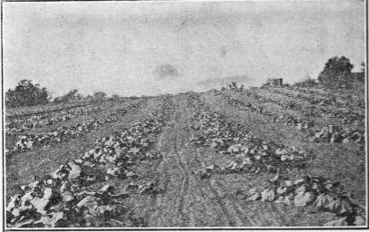

Pumpkin And Squash
Description
This section is from the book "Vegetable Gardening", by Ralph L. Watts. Also available from Amazon: Vegetable Gardening.
Pumpkin And Squash
Pumpkin (Cucurbita)
574. Culture
For cultural directions, see Squash and Watermelon. Sweet pumpkins are sometimes grown on a small scale for commercial purposes.
Squash
602. History
There is considerable uncertainty as to the origin of the squash. Cucurbita Pepo and C. maxima are believed to be natives of tropical America, although they are not known in a wild state. East Asia is probably the home of C. moschata.
Fig. 99. boston marrow squash.
603. Importance
Although the squash is a fairly important vegetable, it is not fully appreciated by American consumers. It is widely cultivated by home and commercial producers, but large areas are not as general as they should be.
604. Summer Varieties
Early White Bush, Mammoth White Bush and Jersey White Bush (Cucurbita Pepo) are the leading varieties of the summer squashes of the "patty pan" type. Yellow Bush and Golden Custard Bush are similar in growth and fruit to the first varieties named, except that the skin is deep orange in color instead of white. Summer Crookneck, and Giant Crookneck, belong to the same species as the White Bush class, but their yellow skins and crooknecks make them distinct. The plants are highly productive and the quality of the fruit is superior to that of the patty pan class. They are grown to a considerable extent for the city markets.
605. Winter Varieties
The varieties of this class (Cucurbita maxima) are extremely variable in shape, color and size.
Hubbard
Hubbard, extensively grown, is a large, fine-grained, dry variety of excellent quality. It is a good keeper.
Warted Hubbard
Warted Hubbard resembles the Hubbard, but is more heavily warted.
Golden Hubbard
Golden Hubbard is a favorite with some growers. The skin is salmon red when ripe.
Boston Marrow
Boston Marrow, .popular in some sections, is grown extensively for storage.
Delicata, Mammoth Whale, Golden Bronze And Essex Hybrid
Delicata, Mammoth Whale, Golden Bronze And Essex Hybrid are well-known varieties.
Cucurbita Moschata
Cucurbita Moschata is a third class represented by the Winter Crookneck, Dunkard and a few other varieties.
606. Culture
The requirements of the squash are not radically different from other cucurbits. The plants, which are not nearly so tender as the melons, will stand more cold than cucumbers. Nevertheless, they are easily injured by frost, so that planting should not occur until the ground is thoroughly warm. A rich, warm, well-drained but moist soil is essential to quick maturity and high yields. The plants are often started under glass like cucumbers and muskmelons. The increased earliness, due to planting under glass, is probably more marked than with any other cucurbit. The plan is popular for the summer crookneck type.
When planted in the open it is customary to sow 10 to 12 seeds in each hill, enriched with two or three forkfuls of rotten manure, and then to thin to two or three plants. Squashes are also planted in drills and thinned as may be desired. The bush types of patty pan and crookneck are generally planted 4 x 4 or 4 x 5 feet apart. The winter or running varieties need as much space as pumpkins and watermelons. Distances vary from 8x8 to 10 x 12 feet, depending upon the fertility of the soil and the vigor of the varieties. Figure 99 shows a field of Boston Marrow in Massachusetts with 12 feet between rows.
607. Marketing
For local markets, summer squashes should be harvested before the rinds harden to any considerable extent. When to be shipped long distances, they must be fairly ripe in order to stand transportation. The barrel is the standard package for handling this vegetable.
608. Storage
Successful storage depends largely upon proper methods of harvesting. The fruits should be removed with short stems before hard frosts arrive. They must be handled with the greatest care and placed promptly in heated buildings, which are often built for the purpose. It is customary to store squashes in bins or on racks, where, with the temperature above 50, they may be kept until May or June. Sweet potatoes and squashes are sometimes stored in the same house.
609. Enemies
The common squash bug (Anasa tris-tis), which is so well known, is one of the worst insect enemies. The pests are unusually resistant to insecticides. Anything which is strong enough to kill the insects will also injure or destroy the vines. Hand picking of the insects and the eggs is effective but tedious.
The bugs may also be trapped under pieces of boards placed near the plants. Covering the young plants with mosquito netting is in many instances the most satisfactory method.
The Squash Vine Borer
The Squash Vine Borer (Melittia satyriniformis) is often a destructive enemy. Early squashes are sometimes planted as traps. The vines, after the crop has been harvested, are pulled and burned. Thus, larvae and eggs are destroyed and the seriousness of the attack upon the later plantings is reduced. Various cultural methods are employed in this connection.
Continue to:
Tags
plants, crops, gardening, cultivated, harvesting, food ,greenhouses, fertiliser, vegitables